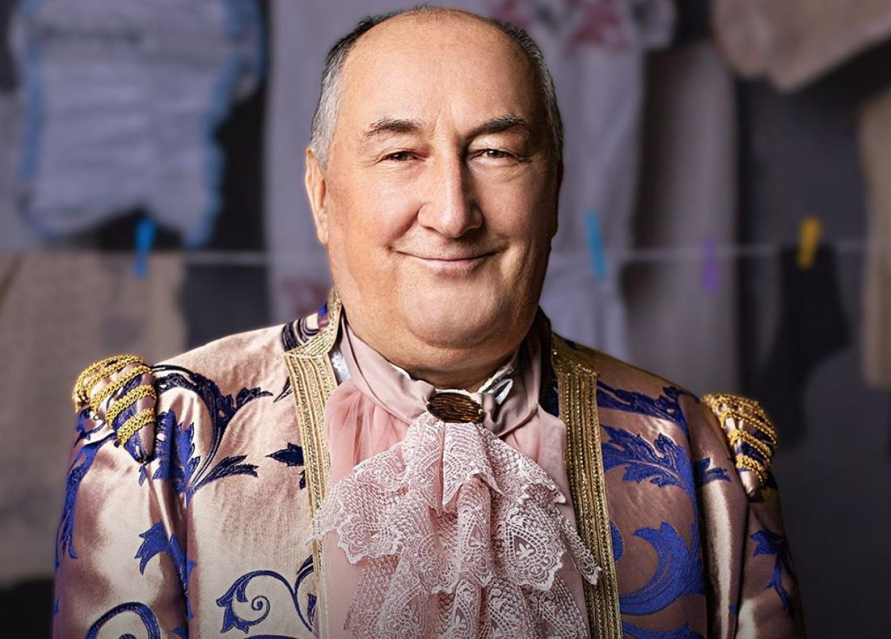
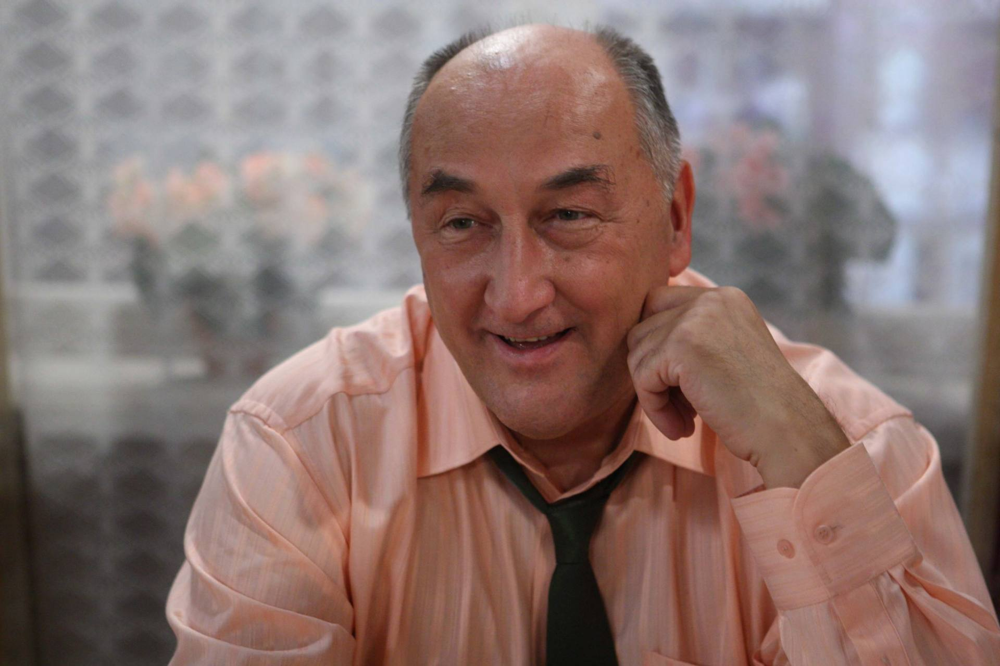
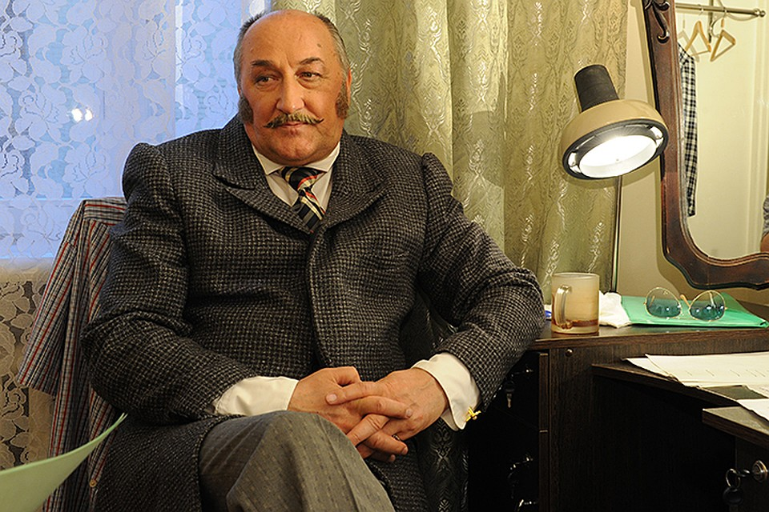
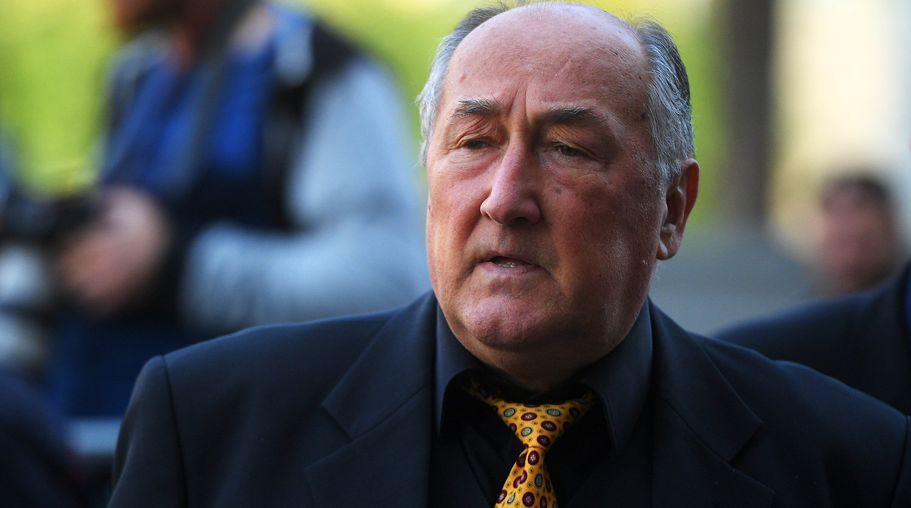

Метка пе
Некоторый репрезентативный заполнитель для первого слайда.

Метка второго слайда
Некоторый репрезентативный заполнитель для второго слайда.

Метка третьего слайда
Некоторый репрезентативный заполнитель для третьего слайда.

Метка третьего слайда
Некоторый репрезентативный заполнитель для третьего слайда.

Метка третьего слайда
Некоторый репрезентативный заполнитель для третьего слайда.